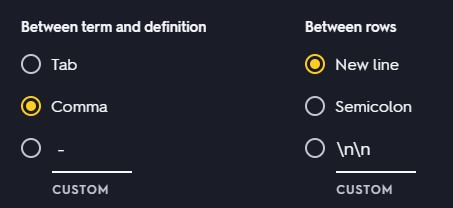

Lang's online converter makes this simple.
Go to your Quizlet Study Set of choice.
Click the 3 dots under the flashcard and then click export.
Make sure your export settings match these:
Now, simply copy and paste the text from Quizlet into the box on the left.
After clicking save, your Quizlet Study Set will be downloaded as a Lang Studysheet
and can now be used on Lang.